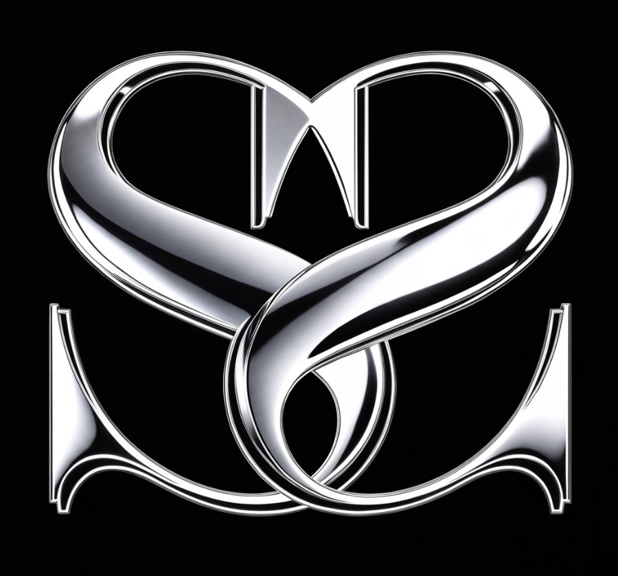

Professional breakdowns of smile transformations, cosmetic trends and visible dental work, judged on design, not filters.
Short, direct answers to the cosmetic dentistry questions Miami asks most.
Teaches you how to recognize excellent cosmetic dentistry, one detail at a time.
A culture-driven series featuring recognizable Miami personalities, creators and professionals, always with their consent.
Corrective cases that show clinical experience and design judgment. We focus on the solution and protect the patient's dignity.
Fast, opinionated responses to trending dental questions and controversial topics.
A preventive education series covering the questions to ask before you commit to any cosmetic work.
News on the tools changing dentistry: AI, digital scans, 3D printing and what they mean for your smile.
Where dentistry’s new tools and techniques debut: the major dental meetings across America, and what they mean for patients.

Powered by 5 Star Smiles